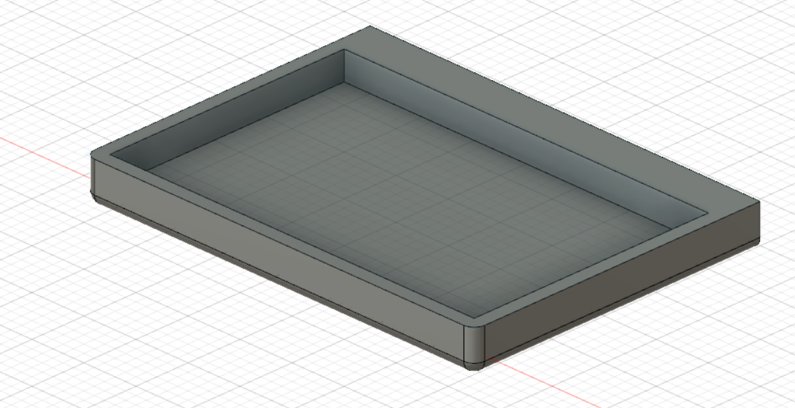
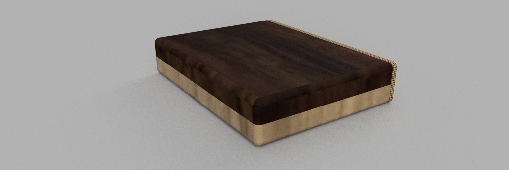
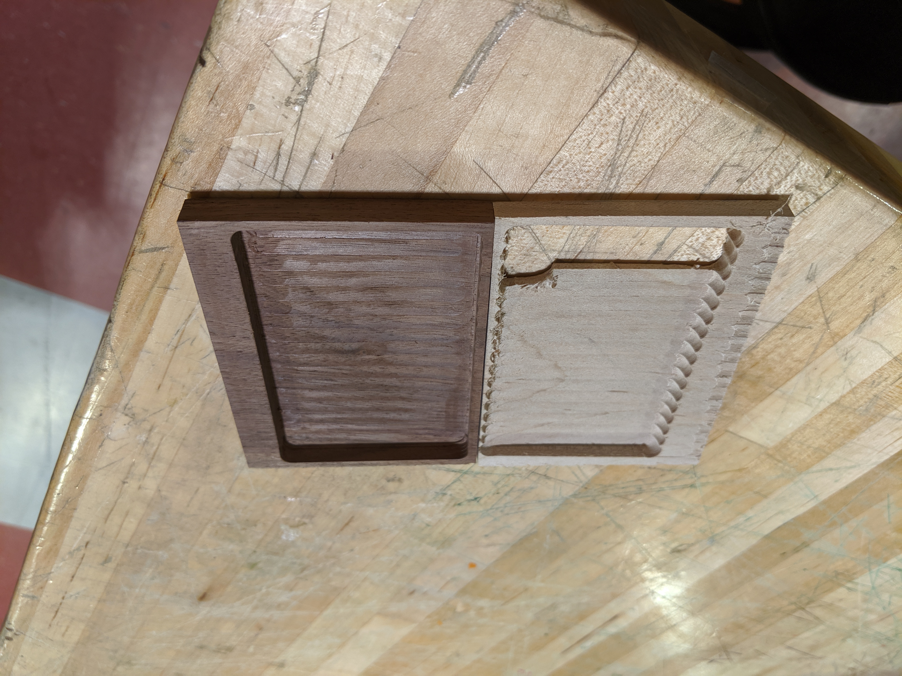
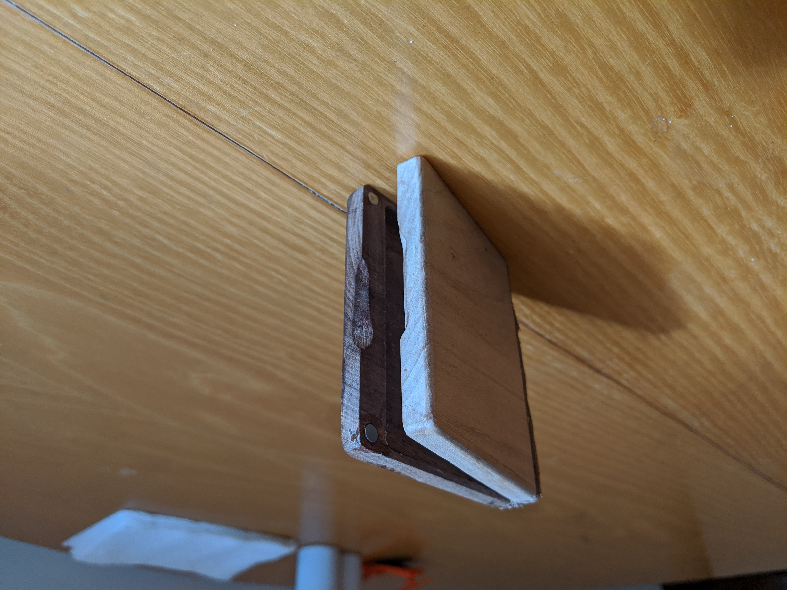
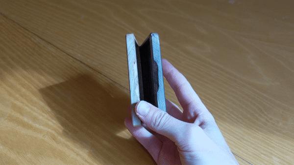
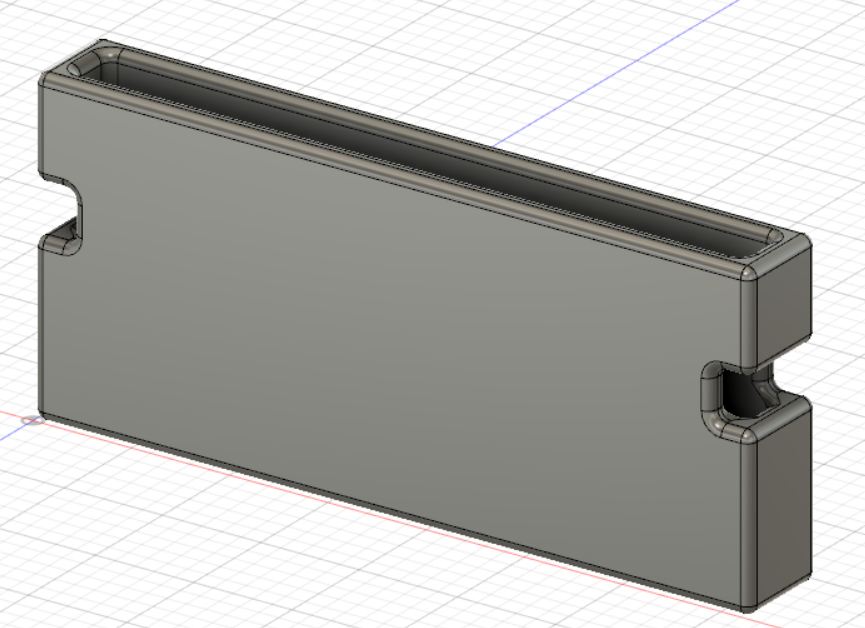
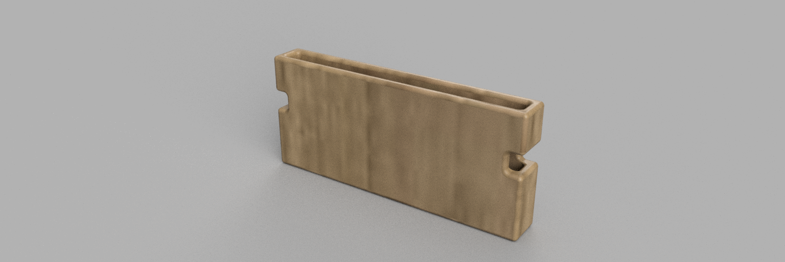
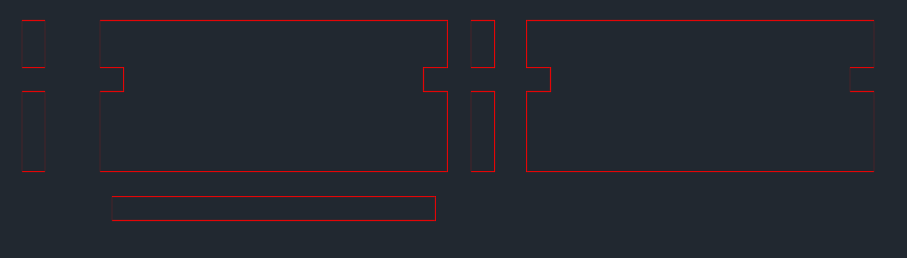
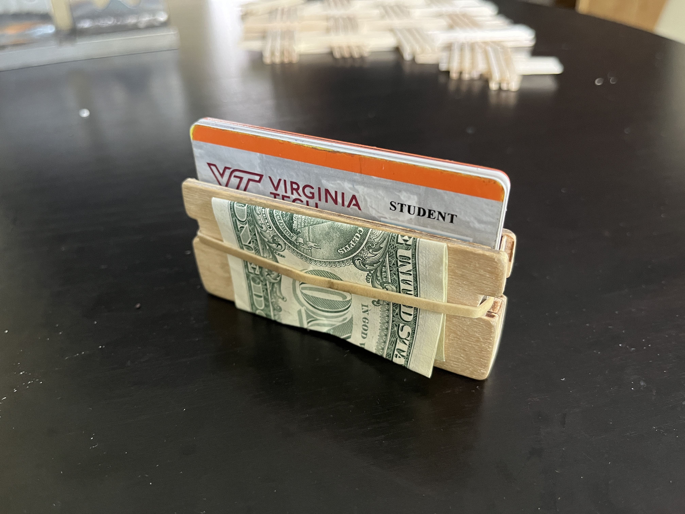

|
|
||
|---|---|---|
| I have always liked wood as a medium for building. I like the way that wood looks and the grain structure and the way it feels. When my leather wallet I had had since I was eleven broke it was time to make a new one. I knew it had to be made of wood. I was inspired by the aluma-wallet which had two seperate sides held together by a hinge and thought I could make one from wood. This was my first version of the wallet.  From that model I rendered the design to see what it would look like with the two types of wood I would use, maple and walnut. I would bind the hinge of the wallet with a strip of leather.  This design required precise wood machining which took some practice. I failed on several pieces before I got the machining right.  With the correct pieces machined I used magnets to hold the two pieces together. This was a very statisfying.   This issue with this design were the magnets. When I was uing the wallet I accidently closed the wallet on my credit card. The magnets in the wallet stripped the magnetic information on my credit card making it useless. This was a HUGE design flaw the rendered this wallet useless. Back to the drawing board. I created a new style of wallet that did not require magnets. This version was very minimal and imspired by some new wallets on the market.  It has a slot for up to 6 cards that are held in place by a rubber band which also allows for cash to be kept on the outside. The first renderings of this wallet seemed promising.  I brought the Fusion360 model into AutoCAD where I was able to slice it into pieces I could cut out of 1/8" plywood on the laser cutter.  After super gluing these pieces together I created the final product which I have been using since the fall of 2020.  |